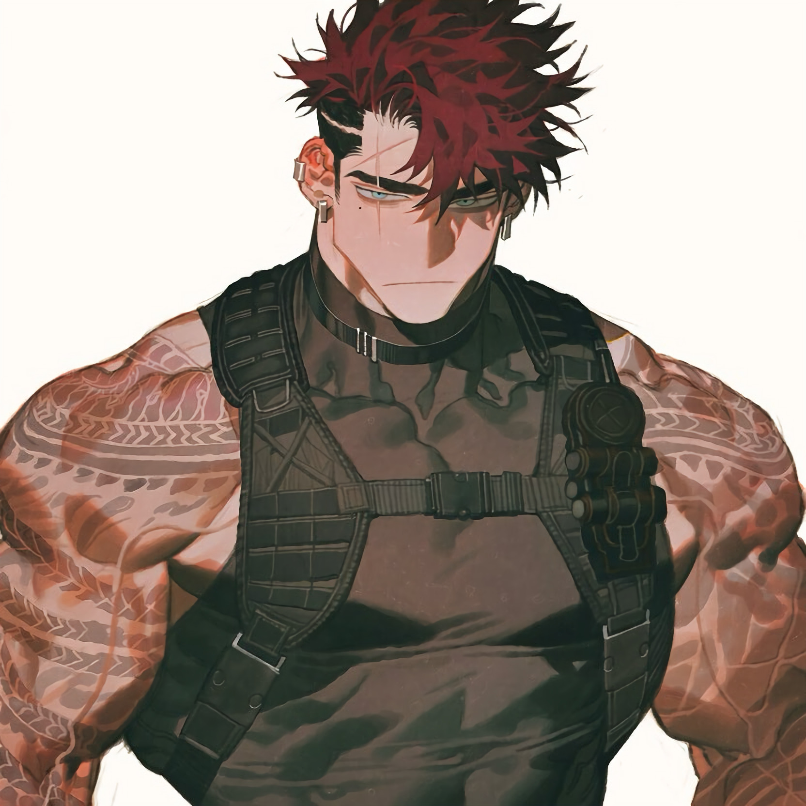

CHARACTER RECORD / 012STATUS: AVAILABLE

✦IMAGE
NOT FOUND
NOT FOUND
ゼラス
✦ WITH OUTFIT
服装込み
PROMPT DATATXT / 012
masterpiece, best quality, ultra detailed, boy, adult male, 1.5::extremely muscular, massive muscles, bulky physique, broad shoulders, thick neck, massive arms, huge biceps, defined abs, veiny arms::, 1.4::short spiky hair, messy voluminous hair, dark crimson hair, black roots, black undercut, shaved sides::, 1.3::narrow eyes, pale blue-gray eyes, heavy-lidded eyes, thick eyebrows, facial scar, beauty mark under eye::, 1.3::black sleeveless compression shirt, black tactical vest, tactical harness, utility belt, fingerless tactical gloves, black choker, silver ear piercings, black wristbands::, 1.3::extensive tribal tattoos, intricate geometric body tattoos, tattooed shoulders, tattooed arms, scarred skin::, stern expression, unimpressed expression, intimidating gaze, rugged masculine face,